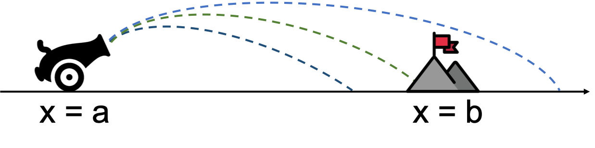

6. Řešení diferenciálních rovnic s okrajovou podmínkou#
V předchozím cvičení jsme se zabývali metodami na řešení počáteční úlohy tvaru:
Tato úloha představuje soustavu obyčejných diferenciálních rovnic 1. řádu s počáteční podmínkou \(\vec{y}(0) = \vec{y}_0\). Tedy známe řešení \(\vec{y}\) v nějakém konkrétním bodě.
V dnešním cvičení si představíme numerické metody řešící okrajové úlohy. Oproti počáteční úloze budeme znát část řešení ve více bodech. Pro \(N=2\) můžeme například mít \(y_0(0) = 0\) a \(y_1(1) = 0\) nebo \(y_0(0) = 0\) a \(y_0(1) = 0\). Druhý případ je běžnější, proto se dále budeme zabývat pouze jím.
Omezíme se na řešení soustavy dvou ODR, která odpovídá diferenciální rovnici druhého řádu:
kde máme dvě okrajové podmínky pro funkci \(y\) v bodech \(a\) a \(b\). Okrajová úloha již nelze řešit stejným způsobem, jako počáteční. Neznáme totiž celé jednoznačné řešení (hodnotu funkce \(y\) i její derivace \(y^{\prime}\)) v jednom konkrétním bodě, ze kterého bychom mohli řešení vyvíjet - integrovat pravou stranu soustavy ODR.
Zde si představíme dvě metody na řešení okrajových úloh:
Metoda střelby
Metoda sítí (konečných diferencí)
Potřebné knihovny:
import numpy as np
import matplotlib.pyplot as plt
from scipy import linalg, integrate, optimize
Pomocí metod budeme řešit následující úlohu, která odpovídá rovnici tlumeného oscilátoru:
kde \(\omega_0 = 10\) je vlastní frekvence oscilátoru a \(\zeta = \frac{1}{10}\) je tlumící faktor.
Rovnice má obecné řešení:
Pro naší volbu koeficientů a okrajové podmínky máme:
na intervalu \( t \in [0, 2] \).
# analyticke reseni rovnice tlumeneho oscilatoru
def y_sol(t):
return -(np.exp(-t) * np.sin(3 * np.sqrt(11) * (t - 2))) / np.sin(6*np.sqrt(11))
tt = np.linspace(0, 2, 100)
plt.plot([0, 2], [1, 0], 'r*')
plt.plot(tt, y_sol(tt));
6.1. Metoda střelby#
Tato metoda je inspirovaná úlohou střelby na cíl v homogenním gravitačním poli Země.

Řekněme, že máme kanón na pozici \(x = a\) a cíl na pozici \(x = b\). Zřejmě nás zajímá, pod jakým úhlem vystřelit a jakou silou (kolik použít střelného prachu), aby koule zasáhla cíl. Víme, že hmotný objekt se v gravitačním poli Země řídí pohybovou rovnicí (zde neuvažujeme odpor vzduchu):
Na začátku známe pouze polohu kanónu a cíle, což odpovídá:
kde \(T\) značí čas dopadu koule zpátky na zem. Tato úloha je okrajovou úlohou, jelikož známe použe část řešení (polohy ale ne rychlosti) na začátku a na konci. Bez znalosti počátečních rychlostí (velikosti rychlosti a náměru děla) nedokážeme řešení vyvíjet integrováním pravé strany. Metodu střelby si dále ukázeme na obecné diferenciální rovnici 2. řádu a k úloze střelby z kanónu se vrátíme v zápočtovém úkolu 5.
Uvažujme opět následující okrajovou úlohu s ODR druhého řádu:
Řešení pomocí metody střelby spočívá v následujících krocích:
náhodně zvolíme počáteční hodnotu derivace \(y^{\prime}(a) = \beta\)
vyřešíme počáteční úlohu:
tím získáme \(y(b; \beta)\)
řešíme nelineální rovnici \(F(\beta) = y(b; \beta) - \alpha_2 = 0\) tím, že opakujeme kroky 1-3
Na krok 4 je možné aplikovat libovolnou z metod představených v předchozím cvičení. Jednoduchou volbou je bisekce, tedy máme na začátku dva odhady \(\beta_1\) a \(\beta_2\) takové, že \(F(\beta_1) F(\beta_2) < 0\) (jednou přestřelíme cíl, podruhé podstřelíme). V následujícím kódu použijeme Newton-Raphsonovu metodu.
Ukážeme si implementaci metody střelby na úloze tlumeného oscilátoru. Počáteční úloha z bodu 2 metody vypadá následovně:
# definice prave strany pocatecni ulohy
def f(t, Y):
y, z = Y # Y je vektor reseni [y, z]
return np.array([z, -2*z - 100*y])
# okrajove podminky
x0 = 0
x1 = 2
y0 = 1
y1 = 0
Řešení počáteční úlohy pro jednu konkrétní volbu \(\beta\):
beta = -100
# druha pocatecni podminka
z0 = beta
res = integrate.solve_ivp(f, [x0, x1], [y0, z0], method='RK45', t_eval = tt)
plt.plot(res.t, res.y[0]) # y[0] odpovida y, y[1] odpovida z=y'
plt.plot([2], [res.y[0, -1]], 'go')
plt.plot([0, 2], [y0, y1], 'r*')
plt.xlabel('t')
plt.ylabel('y');
Implementace metody střelby
Pomocí metody střelby řešte úlohu tlumeného oscilátoru.
Defininujte funkci \(F(\beta)\) podle postupu metody střelby. Najděte kořen této funkce (beta_root) pomocí knihovní funkce optimize.root_scalar(..., method='newton'). Budete potřebovat také darivaci funkce \(F(\beta)\). Použijte aproximaci této derivace pomocí dopředné diference (numerická derivace).
def F(beta):
## DOPLŇTE - definice funkce na hledani korene ##
return None
# numericka derivace
def dF(beta, h = 0.00001):
## DOPLŇTE - numericka derivace funkce F(beta) ##
return None
## DOPLŇTE - hledani korene, Newton-Ralphson ##
res_root = optimize.root_scalar(F, fprime=dF, x0=0, method='newton', rtol=1e-6)
print(res_root)
beta_root = res_root.root
converged: True
flag: 'converged'
function_calls: 8
iterations: 4
root: array([-6.65510418])
Vizualizace řešení
Nalezením kořene \(\beta^{*}\), \(F(\beta^{*}) = 0\), jsme získali počáteční podmínku takovou, že okrajová a počáteční úloha jsou ekvivalentní. Okrajovou úlohu vyřešíme vyřešením počáteční úlohy s \(z(0) = \beta^{*}\):
res_ivp = integrate.solve_ivp(f, [x0, x1], [y0, beta_root], method='RK45', t_eval = tt)
plt.plot(res_ivp.t, res_ivp.y[0], '.', label='numericky střelba') # y[0] odpovida y, y[1] odpovida z=y'
plt.plot(res_ivp.t, y_sol(res_ivp.t), '-', label='analyticky') # presne reseni
plt.plot([2], [res_ivp.y[0, -1]], 'go')
plt.plot([0, 2], [y0, y1], 'r*')
plt.xlabel('t')
plt.ylabel('y')
plt.legend();
# srovnani reseni na pravem okraji
res_ivp.y[0][-1], y_sol(x1)
(-2.7755575615628914e-17, -0.0)
6.2. Metody sítí (konečných diferencí)#
Metoda konečných diferencí, také nazývaná metodou sítí nebo relaxační metodou, je založená na nahrazení derivací v diferenciální rovnici pomocí konečných diferencí. Tím získáme algebraický výraz, který již dokážeme řešit na počítači. Uvažujeme následující ODR 2. řádu s okrajovou podmínkou:
Provedeme nahrazení jednotlivých derivací pomocí následujících aproximací pomocí konečných diferencí, které počítáme na rovnoměrné síti na intervalu \([a, b]\) s krokem \(h\):
Okrajovou úlohu pak můžeme přepsat jako soustavu lineárních algebraických rovnic:
kde \( \tilde{p_i} = p_i \), \( \tilde{q_i} = \left( -2 p_i - q_i h + r_i h^2 \right) \), \( \tilde{r_i} = \left(p_i + q_i h \right) \) a \( \tilde{s_i} = -s_i h^2 \).
V maticové formě má systém lineárních rovnic tvar:
Tato metoda se někdy nazývá relaxační metodou, jelikož typicky řešíme velkou soustavu linearních rovnic pomocí iteračního algoritmu. Tedy máme nějaký počáteční odhad, který iteračně zlepšujeme (viz předchozí kapitola). V případě diferenciální rovnice 2. řádu vidíme, že soustava je třidiagonální, stačilo by tedy využít Thomasova algoritmu!
Pomocí této metody budeme opět řešit úlohu tlumeného oscilátoru:
Postup metody konečných diferencí lze shrnout do následujících kroků:
Zvolíme tvar konečných diferencí, kterými nahradíme jednotlivé derivace.
Získáme soustavu lineárních rovnic - sestavíme matici soustavy a pravou stranu.
Řešíme soustavu pomocí zvoleného algoritmu.
Implementace metodu konečných diferencí
Pomocí metody konečných diferencí řešte úlohu tlumeného oscilátoru.
a = 0
b = 2
# okrajove podminky
alpha1 = 1
alpha2 = 0
## 1. volíme diference podle predchoziho popisu pro obecnou ODR 2. radu
N = 101 # velikost site
h = (b - a) / (N-1)
tt = np.linspace(a, b, N)
## 2. sestaveni matice a prave strany
# koeficienty p_i, q_i, r_i a s_i nezavisi na t !
p_i = 1
q_i = -2 - 2*h + 100*h**2
r_i = 1 + 2*h
s_i = 0
# matice soustavy
A = np.zeros([N, N])
A[0,0] = A[-1,-1] = 1
idx = np.arange(0, N-1)
A[idx[:-1]+1,idx[:-1]] = p_i # spodni vedlejsi diagonala
A[idx[1:],idx[1:]] = q_i # diagonala
A[idx[1:],idx[1:]+1] = r_i # diagonala
# prava strana
b = np.zeros(N)
b[0] = alpha1
b[1:-1] = s_i
b[-1] = alpha2
## 3. vyreseni soustavy
y = linalg.solve(A, b)
A, b
(array([[ 1. , 0. , 0. , ..., 0. , 0. , 0. ],
[ 1. , -2. , 1.04, ..., 0. , 0. , 0. ],
[ 0. , 1. , -2. , ..., 0. , 0. , 0. ],
...,
[ 0. , 0. , 0. , ..., -2. , 1.04, 0. ],
[ 0. , 0. , 0. , ..., 1. , -2. , 1.04],
[ 0. , 0. , 0. , ..., 0. , 0. , 1. ]]),
array([1., 0., 0., 0., 0., 0., 0., 0., 0., 0., 0., 0., 0., 0., 0., 0., 0.,
0., 0., 0., 0., 0., 0., 0., 0., 0., 0., 0., 0., 0., 0., 0., 0., 0.,
0., 0., 0., 0., 0., 0., 0., 0., 0., 0., 0., 0., 0., 0., 0., 0., 0.,
0., 0., 0., 0., 0., 0., 0., 0., 0., 0., 0., 0., 0., 0., 0., 0., 0.,
0., 0., 0., 0., 0., 0., 0., 0., 0., 0., 0., 0., 0., 0., 0., 0., 0.,
0., 0., 0., 0., 0., 0., 0., 0., 0., 0., 0., 0., 0., 0., 0., 0.]))
Vizualizace řešení
plt.plot(tt, y, '.', label='numericky MKD') # y[0] odpovida y, y[1] odpovida z=y'
plt.plot(tt, y_sol(tt), '-', label='analyticky') # presne reseni
plt.plot([0, 2], [y0, y1], 'r*')
plt.xlabel('t')
plt.ylabel('y')
plt.legend();
Knihovna SciPy poskytuje funkci scipy.integrate.solve_bvp() pro řešení okrajových úloh:
y_init = np.zeros([2,N]) # pocatecni odhad
res_bvp = integrate.solve_bvp(f, lambda ya, yb: np.array([ya[0]-alpha1, yb[0] - alpha2]), tt, y_init)
#print(res_bvp)
plt.plot(res_bvp.x, res_bvp.y[0], '.', label='numericky střelba') # y[0] odpovida y, y[1] odpovida z=y'
plt.plot(res_bvp.x, y_sol(res_bvp.x), '-', label='analyticky') # presne reseni
plt.plot([2], [res_bvp.y[0, -1]], 'go')
plt.plot([0, 2], [y0, y1], 'r*')
plt.xlabel('t')
plt.ylabel('y');